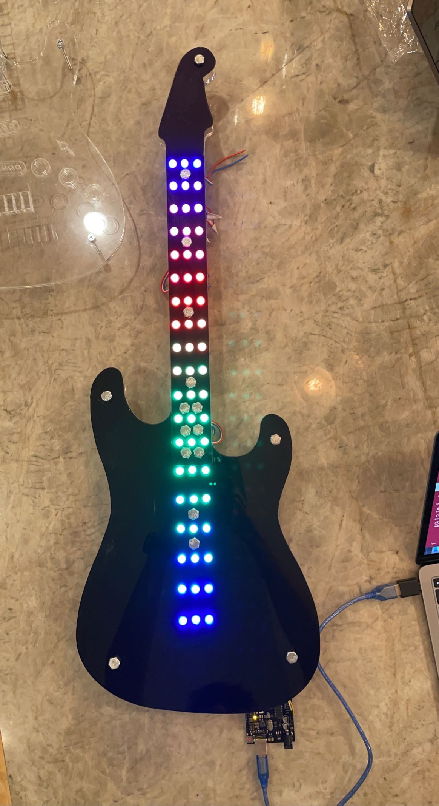
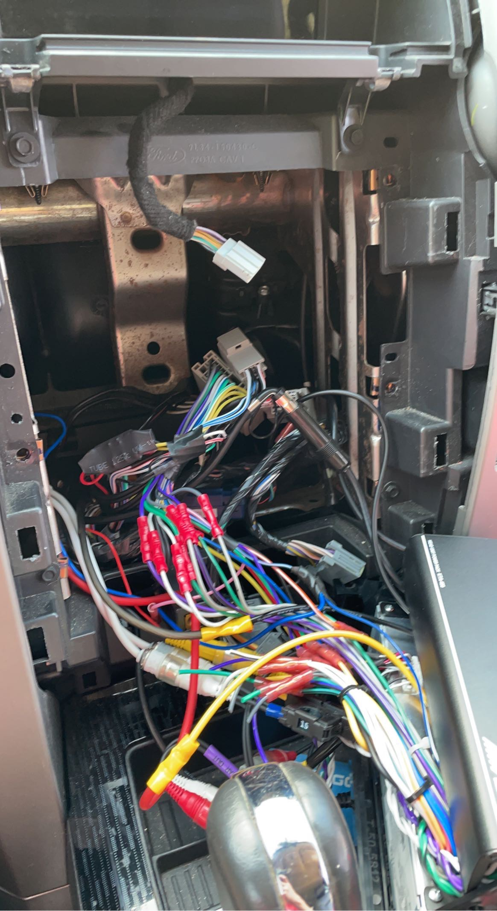

Charlie Fitch Portfolio
Projects
Acrylic Guitars
These are the two guitars I designed and fabricated out of acrylc. The first one I made was the very dark blue one with LEDs, the design wasnt perfect and it wasnt very strong. The finished product looked good though. The secone guitar I made was the red white and black one, The design was alot better and it was also stronger. I painted it to look like Van Halens guitar and it could also be played. It works by using touch sensors that would send signals to an arduino, and then the arduino would communicate with garage band to play sounds.
F-150
My F-150 is deffinently the biggest ongoing project I have done. This truck looks completly diffrent after installing upgrade after upgrade. I have also installed everything myself other then mounting the wheels. Here is a picture from the day I got it.
Headlights
Looking back the truck didn't look too good when we first got it, but back then I absolutly loved it. My first upgrade was new headlights. I spent nearly all my money to buy these headlights but it was worth it. Here's a picture of the new headlights.

Wheels And Tires
Next, I somehow convinced my parents to get new wheels and a level (A level raises the front by 2.5in). So we went to a shop, I picked out some wheels I liked, and we dropped the truck off a couple days later. The wheels looked amazing on the truck, and made it look bigger. When I got home I decided to take off the runningboards because they looked old and didn't match with anything. Here is a picture of the truck after.

Carplay
After that my birthday was rounding the corner, and I asked for apple carplay. I installed that as soon as I could, and it was my first time taking apart the inside of the truck. After that I spent some of my money on new fog lights. The new fog lights were super bright and nicer looking. Heres pictures of both.
Sound System
Im going to keep this short and simple so it dosent turn into a 5000 word essay, but next is the sound system. For the sound system I installed new speakers in all 4 doors, and also installed a 400 watt amp that sends 50 watts to each speaker. That was a big upgrade from the current head unit wich had around 15 watts. Later down the line I got a subwoofer, it was a dual 8in that went under the back seats and it was powered by a 1650 watt amp. I had thoes first speakers for a little over a year, and they were great, but recently I upgraded the door speakers again and they are amazing. The audio is crystal clear and I dont think I could get much better than this. While installing the newer speakers I also added sound deadening and that made a very big diffrence.
Everything else
Here is a list of all he other upgrades I have done. New mirrors, black turn signals on mirrors, new third break light, reverse camera, short antenna. Here is a picture of the truck now.